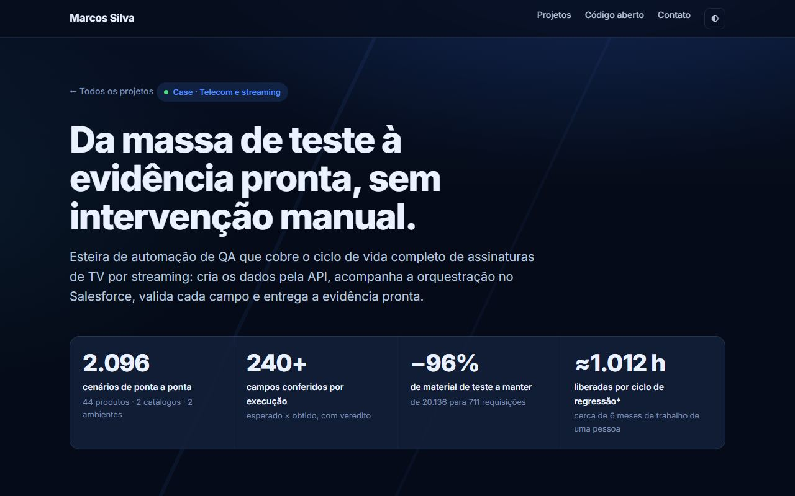
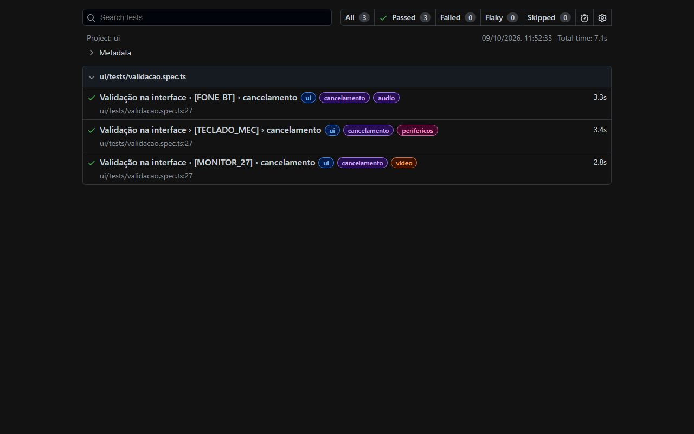
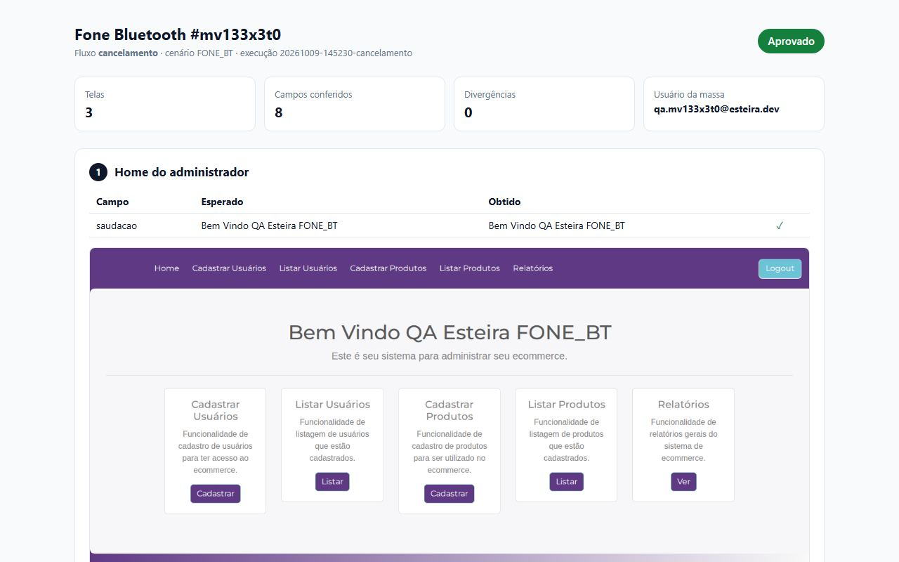

> Olá, eu sou o Marcos 👋
Automação de testes Web, Mobile e API, de ponta a ponta.
Senior QA Engineer, certificado ISTQB Advanced. Automatizo testes Web, Mobile e API integrados ao banco de dados: crio a massa pela API, valido cada campo na interface e no banco e entrego o resultado pronto, para o time testar mais e documentar menos.

Sobre mim
Quem eu sou
Sou especialista em automação de testes com foco em fluxos ponta a ponta de sistemas corporativos: APIs, Salesforce, bancos de dados e as telas por onde o dado passa.
Gosto de transformar processos de QA manuais, lentos e sujeitos a erro em esteiras confiáveis. Faço isso com testes orientados a dados, regras de negócio testáveis, evidência gerada sem operador e critérios objetivos no lugar do "acho que já processou".
No meu último projeto, uma esteira que construí passou a cobrir mais de 2 mil cenários de assinaturas de streaming e reduziu em 94% o esforço humano de um ciclo de regressão.
Experiência
Trajetória
-
out/2023 — atual · híbrido
Senior QA Engineer
Hitss Brasil · produto de assinaturas de TV por streaming em telecom
Criei a esteira de automação de QA de ponta a ponta do produto: massa via API, ações de ciclo de vida (aquisição, suspensão, retomada, cancelamento, chargeback, revogação e expiração), acompanhamento da orquestração no Salesforce, validação no banco e no e-mail do cliente e evidência gerada automaticamente. Resultado: 2.096 cenários cobertos e −94% de esforço humano por ciclo de regressão.
Também automatizei testes Mobile com Appium e APIs no Postman com cenários BDD (Gherkin e Cucumber.js), rodei suítes no GitLab CI/CD e estruturei cadernos de teste no OpenText Octane.
- Playwright
- Appium
- TypeScript
- Newman
- Salesforce
- Cucumber.js
- GitLab CI/CD
- SQL
-
mar/2021 — out/2023 · remoto
Senior QA Automation Engineer
Stigma System
Cenários de teste a partir de regras de negócio, desenvolvimento e manutenção de automações de APIs, testes funcionais e apoio à aceitação do usuário (UAT).
- Automação de APIs
- Testes funcionais
- UAT
-
jan/2018 — dez/2020 · remoto
Analista de Integrações e Automação de APIs Pleno
MR Consultoria
Integrações REST em PHP e JavaScript para provedores de internet, conectando a URA a sistemas como IXCSoft, MK Solutions, Receitanet, Controllr e SGP, com testes e documentação das integrações de faturas e extratos de conexão.
- APIs REST
- PHP
- JavaScript
- Jenkins
- Scrum
-
nov/2014 — nov/2016 · Salvador, BA
Estagiário de Quality Assurance
NPR Brasil
Testes funcionais em sistema financeiro web, modelagem de massas de dados e documentação.
Formação
Tecnólogo em Análise e Desenvolvimento de Sistemas
Universidade Pitágoras Unopar Anhanguera · 2018–2020
Certificação e idiomas
ISTQB CTAL-TA · Certified Tester Advanced Level, Test Analyst
Inglês avançado (C1)
Meus projetos
Projetos em destaque
Um case real, anonimizado, e a mesma arquitetura em código aberto, com CI e relatórios publicados, para você ver como eu escrevo testes.

Esteira de automação de QA
Cria assinaturas pela API, acompanha a orquestração no Salesforce, valida mais de 240 campos e entrega a evidência pronta. Cerca de 1.012 h liberadas por ciclo de regressão.
- Playwright
- Newman
- Salesforce
- Oracle

qa-e2e-pipeline
A arquitetura do case contra uma loja pública: massa data-driven com Newman, espera com critério de pronto, validação com Playwright e Page Objects, e CI no GitHub Actions.
- TypeScript
- Playwright
- Newman
- GitHub Actions

Relatórios e evidências
O resultado da última execução do CI: relatório da massa sem credenciais, relatório do Playwright e uma evidência por cenário, com print de cada tela e esperado × obtido.
- Evidência
- htmlextra
- GitHub Pages
Minhas tecnologias
Stack e ferramentas
As ferramentas com que mais trabalho no dia a dia de automação.
Bancos de dados
Linguagens e entrega
Contato
Vamos conversar?
Se você tem uma oportunidade em QA Automation ou um projeto de automação de testes, fique à vontade para me chamar.